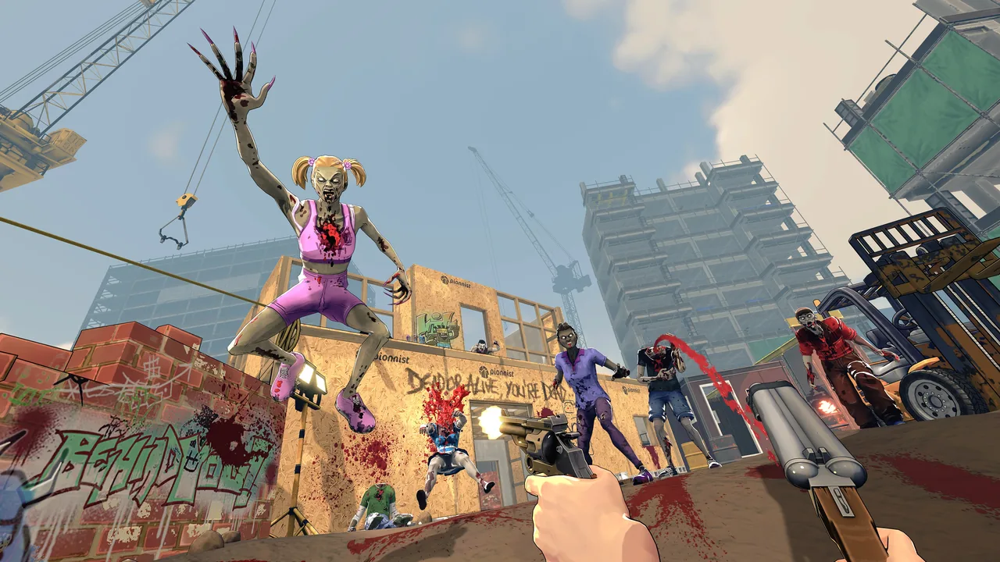

Shipped commercial project · XR Games
Zombieland: Headshot Fever Reloaded
Gameplay features, controller integration, physics and platform delivery for a PSVR2 launch title.

Shipped game
Official game screenshots
Screenshots from the official PlayStation Store listing.


Gameplay and PSVR2 porting
Built for PSVR2
Within the XR Games team, I ported gameplay features and controller integration to PSVR2. I worked on ragdoll physics and resolved physics bugs caused by slow motion.
I worked with Sony developer support to resolve platform-specific questions, helping deliver the game as a PSVR2 launch title.
Reusable save package
Portable progression
I independently authored the reusable save package for the project. That package later formed the basis for extending save support across Steam, Oculus and Sony on Zombie Army VR.
Connected systems
Leaderboards and backend
I handled all leaderboard integration for Zombieland: Headshot Fever Reloaded and also worked on backend setup.
More work